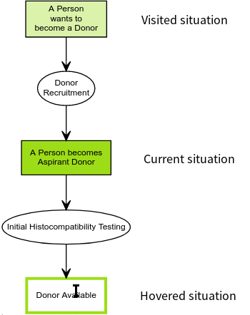

Simulator Help
Model Elements
Model elements are rooted in the UFO-B theory.
| Situation represents a particular state-of-the affairs in the world. In the model, each situation represents a subset of instances of the UFO-A structural conceptual model. | |
| Events (also called perdurants) are individuals composed of temporal parts. They represent a transformations from a portion of reality to another, i.e., they change reality by changing the state of affairs from one situation to another. | |
 |
A situation triggers an event when this situation activates the disposition that is manifested by that event. Dispositions are properties that are only manifested in particular situations and that can also fail to be manifested. When manifested, they are manifested through the occurrence of events. Dispositions inhere in objects and thus transitively in situations, although the notation (trying to be aligned with common process-modelling notations) does not picture this. Dispositions introduce a conditional behavior: they represent decision criteria of firing individual events. Generally, there are two variants: |
| Single disposition inhering in a situation: In this case, the disposition plays a role of a guard, i.e. it specifies a waiting condition (predicate) that is waited upon before the event starts happening. If the guard is not important in the model, it may be ommitted (technically, the guard is "the situation has ripened for the event to start unrolling"), which is the usual case. | |
| Multiple dispositions inhering in a situation: In this case, each event is triggered once the corresponding disposition condition predicate becomes true. As such, zero, one or more events may be triggered. | |
| The merging variant of an event does not unroll unless all dispositions that the event manifests occur, while the standard (non-merging) one starts unrolling once any of the dispositions that the event manifests occurs. |
Simulation
|  |
|